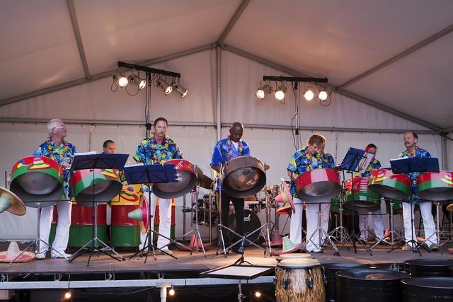
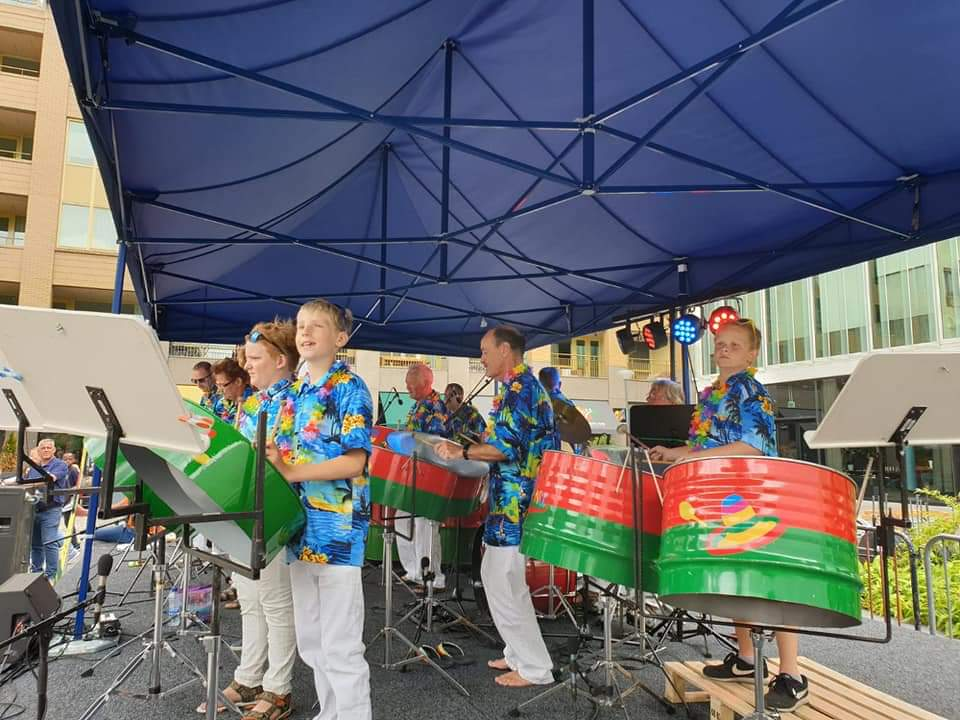

De traditionele steelband heeft vele verschillende instrumenten, waarbij sommigen uit meerdere olievaten bestaan. We hebben dus aardig wat ruimte nodig en zijn niet verplaatsbaar.
- vaste plaats
- minimaal 6 x 4 meter
- bij regen overdekt
- groot repertoire
- met hetzelfde publiek